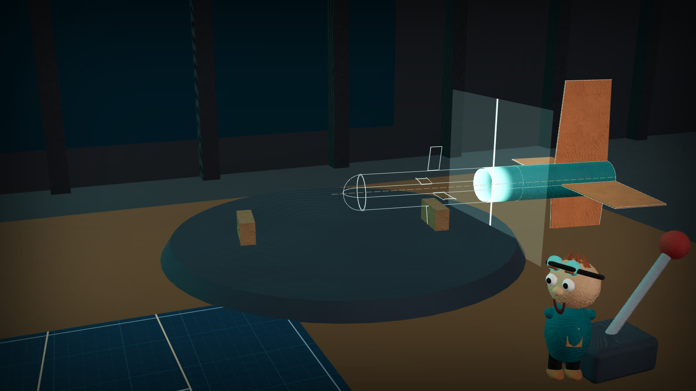

Frame from the opening film · rocket generated from the OpenRocket filePROJECT 33 · VERS3DYNAMICS
The Living Aerospace
Engineering Laboratory
Don't just look at a machine. Take it apart, question its design, explore its mathematics, and find out what the evidence actually demonstrates — including where it fails.
Bench-validation prototype reading the evidence record…
V3D-TO-33-1 / UTILITY BENCH MANUAL
Watch the complete engineering film.
Four minutes of illustrated engineering: annotated pages, a conceptual folding-fin rocket, offline evidence review and the limits of what is known.
Illustrative design film, not a physical demonstration or flight test.
FOUR WAYS IN
Choose how deep to go.
An engineer never has to sit through a lesson to reach the technical material, and a student never needs a degree to enjoy the world.
Every machine begins with a question.
An 80-second handmade film: pencil, clay workshop, scan, exploded assembly — and an honest answer.
Watch → 02 · Guided LabSix lessons, real challenges.
Clay guides introduce a question, then hand you the actual tools and data to answer it.
Begin → 03 · Engineering WorkbenchRotate. Explode. Section.
CAD-style inspection of geometry built from the OpenRocket model and the STEP export, every dimension traced to its field.
Open → 04 · Research ArchiveThe record, unfiltered.
Documents, provenance digests, the capability matrix, the source-rights audit, and every reproducibility command.
Browse →THREE KINDS OF INFORMATION
You always know what you are looking at.
THE LABORATORY
Five rooms, one standard of evidence.
3D Engineering Workbench
Exploded assemblies, five renderings (clay, solid, wireframe, blueprint, x-ray), section planes with hatching, orthographic views, measurement, and an inspector that says NOT SPECIFIED when the source is silent.
Source modelSource CADFusion archives: inventory
Mechanism Lab
The four-bar linkage that cannot close, visualized from the committed model: the gap, the inequality behind it, all 81 recorded variants, and a clearly labelled sandbox. Plus a comparison studio where two stability models disagree and neither is crowned.
Evidence Observatory
A constellation of claims, requirements, discrepancies, predictions, and artifacts. Unresolved looks unfinished, not broken; contradicted looks fractured; software support never masquerades as physical performance.
Telemetry & Signal Theater
How measurements become evidence: clock domains, gaps, duplicates, filtering, spectra — on clearly labelled synthetic data — and a 3D systems architecture with no transmit path.
Historical Instrumentation
What aircraft displays teach about trust: raw observations, estimates, stale and missing data, and failure dependencies — compared with Project 33's own source-pinned status model.
THE RECORD TODAY
Unresolved is a valid engineering state.
What has been demonstrated
- Both firmware projects compile in CI — compiling is not hardware behavior.
- Model outputs regenerate from source and match by value.
- Record consistency, archive digests, and generated documents agree.
- Every safety interlock is pinned to exact source lines by tests.
What has not been measured
- Timing jitter, spring rate, part masses, dry CG, servo authority, gyro drift — NOT MEASURED
- Mechanism deployment and stiffness — NOT MEASURED
- Interlock behavior on physical boards — NOT MEASURED
- Flight readiness — not assessed; outside the validation boundary.